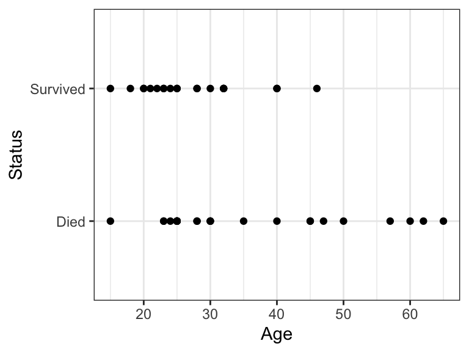
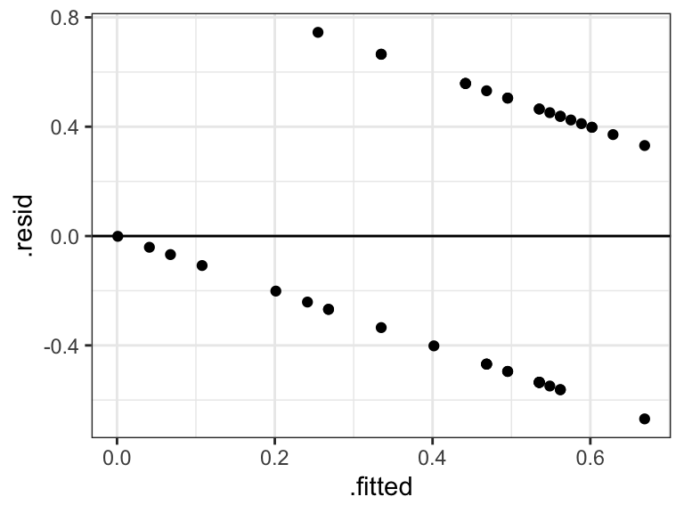
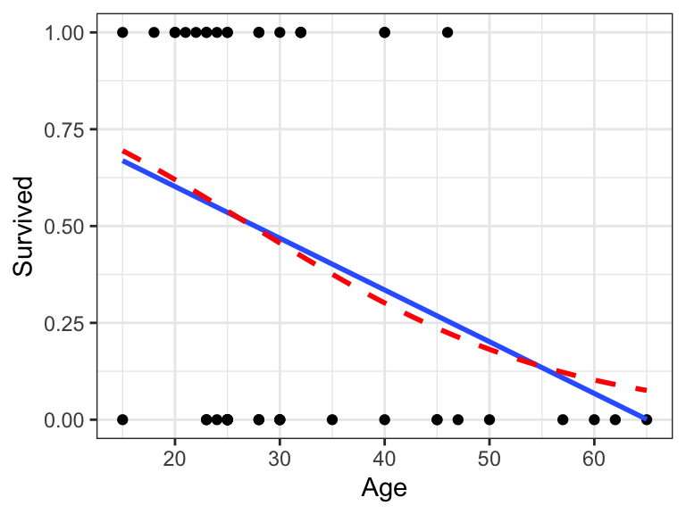
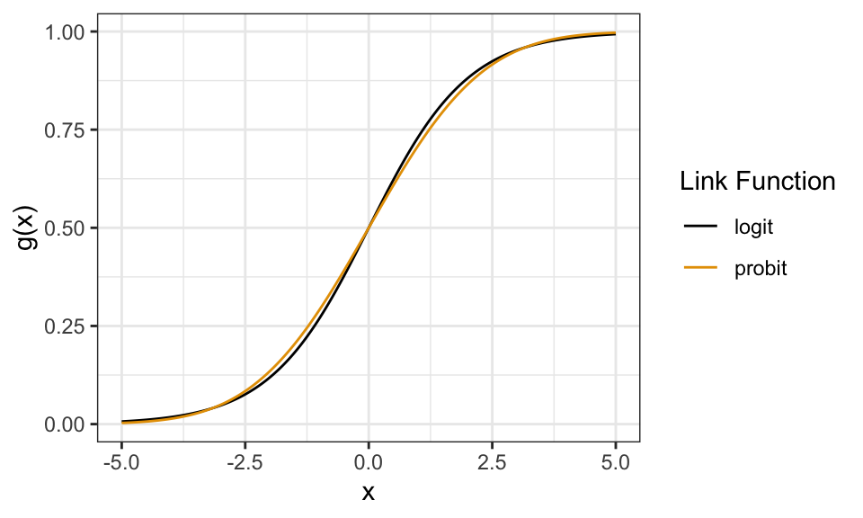
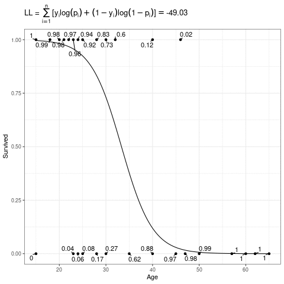
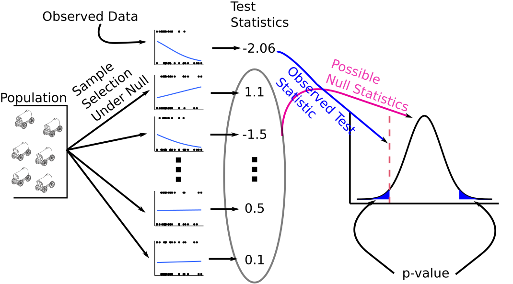
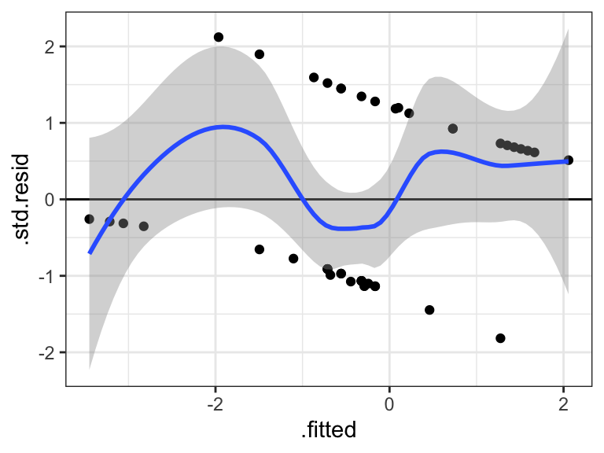

library(tidyverse)
library(broom)
library(sandwich)
library(lmtest)
library(brglm2)Logistic Regression
Learning Objectives
- Logistic Regression for Binary Response Variables
- Chapter 20 of the Statistical Sleuth
Motivation
Lots of regression problems involve response variables that are binary — the only possible values are either 0 or 1.
- Alive (1) vs dead (0)
- Success (1) vs failure (0)
- Presence (1) vs absence (0)
It is arbitrary and unimportant which variable you encode as 1 vs 0.
- E.g. we could have coded “dead” as 1 and “alive” as 0.
- Just keep track of the coding for interpretation purposes.
E.g., either survival (\(Y_i = 1\)) or death (\(Y_i = 0\)) of individual \(i\) from the Donner Party of 1846.
donner <- read_csv("https://dcgerard.github.io/stat_302/data/case2001.csv") glimpse(donner)Rows: 45 Columns: 3 $ Age <dbl> 23, 40, 40, 30, 28, 40, 45, 62, 65, 45, 25, 28, 28, 23, 22, 23,… $ Sex <chr> "Male", "Female", "Male", "Male", "Male", "Male", "Female", "Ma… $ Status <chr> "Died", "Survived", "Survived", "Died", "Died", "Died", "Died",…We often want to quantify the association between a quantitative predictor \(x\) and the binary response \(y\). E.g. older folks tended to die at a higher frequency:
ggplot(data = donner, mapping = aes(x = Age, y = Status)) + geom_point()
Linear Probability Model (LPM)
If your goal is not prediction, then it is not entirely incorrect to just use linear regression (Hellevik 2009; Gomila 2021).
- I am hedging here since this is a controversial statement.
Let \(Y_i \sim Bern(p)\). That is \(Y_i\) is 1 with probability \(p\) and is 0 with probability \(1-p\). Then
- \(E[Y_i] = p\)
- \(var(Y_i) = p(1-p)\)
Suppose \(Y_i\) is 1 for “success” and “0” for failure. Suppose we have the model \[ Y_i = \beta_0 + \beta_1X_{i1} + \beta_2X_{i2} + \cdots + \beta_{p-1}X_{i,p-1} + \epsilon_i. \]
Since \(E[Y_i]\) is the probability that \(Y_i\) is 1, that means we can interpret the regression line as the probability that \(Y_i\) is 1.
Interpreting the regression coefficients: “Individuals that are 1 unit larger in \(X_{ik}\) are \(\beta_k \times 100\) percentage points more probable to have a \(Y\) value of 1, adjusting for other variables.”
Let’s apply this to the Donner party data
donner <- mutate(donner, Survived = if_else(Status == "Survived", 1, 0)) lmout <- lm(Survived ~ Age, data = donner) lmoutCall: lm(formula = Survived ~ Age, data = donner) Coefficients: (Intercept) Age 0.86923 -0.01336Thus, individuals that were one year older were 1.3 percentage points less likely to survive.
Bernoulli random variables are always heteroscedastic since their variance is a function of the mean \(p(1-p)\). So if you use the LPM, you need to use heteroscedastic robust standard errors.
cout <- coeftest(x = lmout, vcov. = vcovHC) tidy(cout)# A tibble: 2 × 5 term estimate std.error statistic p.value <chr> <dbl> <dbl> <dbl> <dbl> 1 (Intercept) 0.869 0.171 5.08 0.00000772 2 Age -0.0134 0.00413 -3.23 0.00235Residual plots are useless here, so never show them:
aout <- augment(lmout) ggplot(data = aout, mapping = aes(x = .fitted, y = .resid)) + geom_point() + geom_hline(yintercept = 0)
Issues
Econometricians and psychometricians love the LPM because of its ease of interpretability.
Statisticians typically do not like it (though I’m agnostic).
The possible values of \(\beta_0 + \beta_1X_{i1} + \beta_2X_{i2} + \cdots + \beta_{p-1}X_{i,p-1}\) are any real numbers between \(-\infty\) and \(\infty\), but the probability of \(Y_i\) being 1 can only be between 0 and 1.
So it is possible (and typical in many datasets) to have probability estimates that are negative or greater than 1. This makes folks squeamish.
E.g., the point-wise confidence bands from the Donner party make no sense:
ggplot(donner, aes(x = Age, y = Survived)) + geom_point() + geom_smooth(method = "lm", formula = y ~ x)
When the probability of a “1” is between about 0.2 and 0.8, then the linear and logistic (see below) models produce about the same results.
- This is a conditional probability. So all values of \(E[Y|X]\) must be between 0.2 and 0.8 for all values of \(X\) for this to hold.
- I.e., you cannot just look at the marginal proportions of 1’s and 0’s and use this to say if the LPM is good.
Let’s look at the differences in the Donner party example:
ggplot(donner, aes(x = Age, y = Survived)) + geom_point() + geom_smooth(method = "lm", se = FALSE, formula = y ~ x) + geom_smooth(method = "glm", se = FALSE, method.args = list(family = "binomial"), color = "red", lty = 2, formula = y ~ x)
Logistic Regression Model
Let \(p_i\) be the probability that individual \(i\) is 1. I.e. \(E[Y_i] = p_i\). Then our model is \[ \text{logit}(p_i) = \beta_0 + \beta_1X_{i1} + \beta_2X_{i2} + \cdots \beta_{p-1}X_{i,p-1} \]
Here, \(\text{logit}(\cdot)\) is the “logit” function, \[ \text{logit}(p_i) = \log\left(\frac{p_i}{1-p_i}\right). \]
The inverse of the logit function is the “expit” function (confusingly, also known as the “logistic” function) \[ \text{expit}(\eta) = \frac{e^{\eta}}{1 + e^{\eta}}. \]
So we can equivalently write this model as \[ p_i = \text{expit}\left(\beta_0 + \beta_1X_{i1} + \beta_2X_{i2} + \cdots \beta_{p-1}X_{i,p-1}\right) \]
The \(\text{expit}(\cdot)\) function takes a number from \(-\infty\) to \(\infty\) and places it between 0 and 1. Thus, it forces the probabilities to be between 0 and 1.

Generalized Linear Model
This is an example of a “generalized linear model”. Let \(Y_i\) follow any distribution we specify Let \(\mu_i\) be the mean of \(Y_i\). Then a generalized linear model is \[ g(\mu_i) = \beta_0 + \beta_1X_{i1} + \beta_2X_{i2} + \cdots \beta_{p-1}X_{i,p-1} \]
Here, \(g(\cdot)\) is called the “link function”. The model is linear on the link scale (hence “generalized linear model”).
In logistic regression, \(Y_i \sim Bern(\mu_i)\) and \(g(\mu_i) = \text{logit}(\mu_i)\).
Another example is probit regression (more popular in econ) where \(g(\mu_i) = \Phi^{-1}(\mu_i)\), the standard normal quantile function (
qnorm()). This gives you almost identical results (except in the tails), but statisticians don’t like the probit because it’s less interpretable than the logit.
- Technical, unimportant note: The above plots the quantile function of a \(N(0, \pi^2/3)\) distribution for the probit to account for the difference in variances between the normal and logit distributions. This makes the two curves comparable.
In log-linear models (which we might discuss later), we model counts with \(Y_i \sim Poi(\mu_i)\) (Poisson Distribution) and \(g(\mu_i) = \log(\mu_i)\).
Estimation
Maximum Likelihood Estimation
We don’t use least squares for estimation. Rather, we use Maximum Likelihood.
The probability that \(Y_i = 1\) is \(p_i\) and the probability that \(Y_i = 0\) is \(1 - p_i\).
Let \(y_i \in \{0,1\}\) be the observed value of the random variable \(Y_i\). Then we can succinctly write the probabilities of \(Y_i\) as \[ Pr(Y_i = y_i) = p_i^{y_i}(1-p_i)^{1 - y_i} \] Go ahead and plug in \(y_i = 0\) and \(y_i = 1\) to see this.
So the probability of our data given \(p_i\) is \[ Pr(Y_1 = y_1, Y_2 = y_2, \ldots, Y_n = y_n) = \prod_{i=1}^n p_i^{y_i}(1-p_i)^{1-y_i} \]
Recall that \[ \text{logit}(p_i) = \beta_0 + \beta_1X_{i1} + \cdots \beta_{p-1}X_{i,p-1}. \]
So the probability of the data is a function of \(\beta_0,\beta_1,\ldots,\beta_{p-1}\).
IDEA: Choose the \(\beta_k\)’s that make our observed data as probable as possible.
- PHILOSOPHY: we observed our data (that’s why we have it), so it is probably likely to have been generated. Choose the parameters that would maximize the probability of seeing the data we actually saw.
The objective function is called the “likelihood”.
The resulting estimates are called the “maximum likelihood estimates” (MLE’s).
Typically, we actually maximize the log of the likelihood \[ L(\mathbf{\beta}) = \sum_{i=1}^n [y_i\log(p_i) + (1-y_i)\log(1-p_i)] \]
Below, the expit curve is morphing according to different values of \(\beta_0\) and \(\beta_1\). The text by the points is the probability of the those observed points, which in this case is just the height (when \(Y_i = 1\)) or one minus the height (when \(Y_i = 0\)) of the expit function. The likelihood is the product of those probabilities, and the log-likelihood is the sum of the log of those probabilities.

Implementation in R
You should transform your binary variable to have 0’s and 1’s. You should call your new variable the value when \(Y_i = 1\). E.g. in the Donner party we created the “Survived” variable.
donner <- mutate(donner, Survived = if_else(Status == "Survived", 1, 0))Let \(Y_i\) be an indicator for survival for individual \(i\), let \(X_{i1}\) be the age of individual \(i\), and let \(X_{i2}\) be an indicator for male Then we fit the model \[\begin{align} Y_i &\sim Bern(p_i)\\ \text{logit}(p_i) &= \beta_0 + \beta_1X_{i1} + \beta_2X_{i2} \end{align}\]
We fit all generalized linear models in R with
glm(). The arguments areformula: The same idea as inlm(). Response variable on the left of the tilde, explanatory variables on the right of the tilde.data: The data frame where the variables are.family: The distribution of \(Y_i\).gaussianwill assume normal errors (like inlm()).binomialin this case will fit the bernoulli model since \(Bern(p_i) = Bin(1, p_i)\).
- You can specify the link function here as well. So for probit models you would do
binomial(link = "probit"). The default is for logistic regression, so you just need to say “binomial” for this argument.
Let’s fit the model
glm_out <- glm(Survived ~ Age + Sex, data = donner, family = binomial)You again use
tidy()from the{broom}package to get estimates / standard errorstidy(glm_out)# A tibble: 3 × 5 term estimate std.error statistic p.value <chr> <dbl> <dbl> <dbl> <dbl> 1 (Intercept) 3.23 1.39 2.33 0.0198 2 Age -0.0782 0.0373 -2.10 0.0359 3 SexMale -1.60 0.755 -2.11 0.0345So the estimated regression surface is \[ \text{logit}(p_i) = 3.23 -0.08X_{1} - 1.60X_{2} \]
Exercise: What if \(X_2\) would have been an indicator for female? What would the coefficient estimate of \(\beta_2\) be?
Bias reduction
For small sample sizes, the MLE’s of the logistic regression coefficients can be biased. A quick way to reduce this bias is through the
{brglm2}package, which uses the method of Firth (1993).Let’s try this out on the Donner party example
glm_out2 <- glm(Survived ~ Age + Sex, data = donner, family = binomial, method = brglm2::brglm_fit) tidy(glm_out2, conf.int = TRUE)# A tibble: 3 × 7 term estimate std.error statistic p.value conf.low conf.high <chr> <dbl> <dbl> <dbl> <dbl> <dbl> <dbl> 1 (Intercept) 2.80 1.28 2.18 0.0292 0.283 5.31 2 Age -0.0669 0.0346 -1.94 0.0528 -0.135 0.000821 3 SexMale -1.43 0.725 -1.98 0.0482 -2.85 -0.0116This actually resulted in some moderate differences!
Interpretation
Odds
The interpretation of the logistic regression model requires you to be familiar with odds.
As I write this, the Baltimore Ravens have 3 to 2 odds of defeating the Miami Dolphins tomorrow. This means that the odds of a Ravens victory are \(3/2 = 1.5\).
The odds of an event are the probability of that event divided by the probability of not that event.
Let \(p\) be the probability of an event, and let \(\omega\) be the odds of the same event. Then we have the relations: \[ \omega = \frac{p}{1-p}\\ p = \frac{\omega}{1+\omega} \]
So odds are just another description of probabilities.
In the football example above, the Ravens’ probability of wining is 0.6, so the odds are 0.6/0.4 = 3/2 = 1.5.
Exercise: The Chiefs have 2 to 1 odds over the Chargers tomorrow. What’s the probability of a Chief’s win?
Exercise: As I write this, FiveThirtyEight has the Democrats with a 2/3 probability of keeping the Senate in the 2022 midterm election. What are the odds of a Democrat victory?
Interpreting Logistic Regression Model
Let \(\omega_{old}\) be the odds of an individual. We can write the logistic regression model as \[ \omega_{old} = \exp\left(\beta_0 + \beta_1X_{1} + \beta_2X_{2} + \cdots \beta_{p-1}X_{p-1}\right) \]
Suppose that a different individual has the exact same predictor values except one unit higher \(X_1\). Then \[\begin{align} \omega_{new} &= \exp\left(\beta_0 + \beta_1(X_{1} + 1) + \beta_2X_{2} + \cdots \beta_{p-1}X_{p-1}\right)\\ &= \exp\left(\beta_0 + \beta_1X_{1} + \beta_1 + \beta_2X_{2} + \cdots \beta_{p-1}X_{p-1}\right)\\ &= \exp(\beta_1)\exp\left(\beta_0 + \beta_1X_{1} + \beta_2X_{2} + \cdots \beta_{p-1}X_{p-1}\right)\\ &= \exp(\beta_1)\omega_{old} \end{align}\]
Thus, the odds of the second individual are \(e^{\beta_1}\) times as large as the odds of the first individual.
Different way to say this: The odds ratio for the two individuals is \(e^{\beta_1}\).
Recall the estimated regression relationship from the Donner party example: \[ \text{logit}(p_i) = 3.23 -0.08X_{1} - 1.60X_{2} \]
So individuals of the same sex that are 10 years younger have about twice the odds of surviving (\(e^{0.0782 \times 10} = 2.186\)). Also, a woman’s odds of survival were about 5 times that of a man of the same age (\(e^{1.6} = 4.95\)).
Exercise: The nocturia data set, described here and downloadable from here, contains patient covariates that are believed to be associated with whether the individual has nocturia (wakes up to pee). Download the data, the fit of logistic regression model of nocturia on age. Interpret the resulting coefficients.
Retrospective studies
In a prospective study, the explanatory variables are fixed and we imagine \(Y_i\) being sampled given \(X_i\).
- E.g. we might choose \(200\) patients and observe their cancer status.
In a retrospective study, we fix \(Y_i\) and later observe their \(X_i\).
- E.g. we might choose \(n = 100\) cancer patients and \(n = 100\) controls.
- This is typically done with the probability of one group is really small and you want more samples of that group.
The LPM model (and probit model) are not valid in retrospective studies, but the logistic regression model is valid. So in retrospective studies you must use logistic regression.
The reason is that the odds ratios for prospective studies and retrospective studies are the same, even though the probabilities are not.
You can interpret slopes in the usual way in retrospective studies, but
- You cannot interpret the \(Y\)-intercept.
- You cannot interpret any fixed estimate of the probability.
- You can only interpret the slope (the odds ratio).
Proof
Let’s suppose that we have model \[ Pr(Y = 1|X) = \text{expit}(\beta_0 + \beta_1X) = \frac{e^{\beta_0 + \beta_1X}}{1 + e^{\beta_0 + \beta_1X}} \]
Let’s introduce a binary variable \(Z\) which is 1 if a unit is sampled, and 0 if it is not sampled. Let \[ Pr(Z = 1|Y = 1) = \pi_1\\ Pr(Z = 1|Y = 0) = \pi_0\\ \]
So we sample a \(Y_i = 1\) individual with probability \(\pi_1\) and a \(Y_i = 0\) individual with probability \(\pi_0\). This is a retrospective design, where the \(\pi\)’s are not functions of the \(X_i\)’s.
We can only model the data we observe, so we want \(Pr(Y = 1|Z=1, X)\), which we can calculate using Bayes theorem \[\begin{align} Pr(Y = 1|Z=1, X) &= \frac{Pr(Z = 1|Y = 1, X) Pr(Y = 1|X)}{Pr(Z = 1|Y = 1, X) Pr(Y = 1|X) + Pr(Z = 1|Y = 0, X) Pr(Y = 0|X)}\\ &= \frac{\pi_1 Pr(Y = 1|X)}{\pi_1 Pr(Y = 1|X) + \pi_0 Pr(Y = 0|X)}\\ &= \frac{\pi_1 \text{expit}(\beta_0 + \beta_1X)}{\pi_1 \text{expit}(\beta_0 + \beta_1X) + \pi_0 (1 - \text{expit}(\beta_0 + \beta_1X))}\\ &= \frac{\pi_1 \frac{e^{\beta_0 + \beta_1X}}{1 + e^{\beta_0 + \beta_1X}}}{\pi_1 \frac{e^{\beta_0 + \beta_1X}}{1 + e^{\beta_0 + \beta_1X}} + \pi_0 \frac{1}{1 + e^{\beta_0 + \beta_1X}}}\\ &= \frac{\pi_1 e^{\beta_0 + \beta_1X}}{\pi_1 e^{\beta_0 + \beta_1X} + \pi_0}\\ &= \frac{\frac{\pi_1}{\pi_0} e^{\beta_0 + \beta_1X}}{\frac{\pi_1}{\pi_0} e^{\beta_0 + \beta_1X} + 1}\\ &= \frac{e^{(\beta_0 + \log(\pi_1 / \pi_0)) + \beta_1X}}{e^{(\beta_0 + \log(\pi_1 / \pi_0)) + \beta_1X} + 1}\\ &= \frac{e^{\tilde{\beta}_0 + \beta_1X}}{e^{\tilde{\beta}_0 + \beta_1X} + 1}\\ &= \text{expit}(\tilde{\beta}_0 + \beta_1X), \end{align}\] where \(\tilde{\beta}_0 = \beta_0 + \log(\pi_1 / \pi_0)\).
Thus, in a retrospective study, we are estimating \(\beta_1\) and \(\tilde{\beta}_0\) (not \(\beta_0\)).
So, it is impossible to estimate \(\beta_0\) (and hence, impossible to estimate the probability of \(Y_i = 1\) at any value of \(X\)).
BUT it is possible to estimate \(\beta_1\) (and thus, the relationship between variables).
Inference
- (Essentially) all maximum likelihood estimates enjoy good properties
- Mostly unbiased.
- Equations for standard deviation calculations are available.
- Sampling distribution of MLE’s is approximately normal for moderate to large sample sizes.
That means that we can take take the same approaches as in linear regression to run hypothesis tests and obtain confidence intervals.
For large samples, we have that the MLE’s have the following sampling distribution: \[ \frac{\hat{\beta}_i - \beta_i}{s(\hat{\beta}_i)} \sim N(0, 1) \]
Hypothesis test:
- \(H_0: \beta_i = 0\)
- \(H_A: \beta_i \neq 0\)
\(z^* = \frac{\hat{\beta}_i}{s(\hat{\beta}_i)}\)
Under the null, \(z^*\) asymptotically follows a standard normal distribution. Use this to calculate a \(p\)-value in the usual way.

We can also use this property to obtain a confidence interval for \(\beta_i\).
Let \(u = \text{qnorm}(1 - \alpha / 2)\), which is 1.96 when \(\alpha = 0.05\). \[ Pr\left(-u \leq \frac{\hat{\beta}_i - \beta_i}{s(\hat{\beta}_i)} \leq u\right) = 0.95 \]
Solving for \(\beta_i\), we get the following \((1 - \alpha)\times 100\%\) confidence interval: \[ \hat{\beta}_i \pm \text{qnorm}(1 - \alpha / 2) s(\hat{\beta}_i) \]
We do not use the \(t\)-distribution here because the \(t\) results from assuming normal error terms, which is not the case here.
In R, you get these quantities by
tidy().glm_out <- glm(Survived ~ Age + Sex, data = donner, family = binomial) tidy(glm_out, conf.int = TRUE)# A tibble: 3 × 7 term estimate std.error statistic p.value conf.low conf.high <chr> <dbl> <dbl> <dbl> <dbl> <dbl> <dbl> 1 (Intercept) 3.23 1.39 2.33 0.0198 0.851 6.43 2 Age -0.0782 0.0373 -2.10 0.0359 -0.162 -0.0141 3 SexMale -1.60 0.755 -2.11 0.0345 -3.23 -0.195
Point-wise estimation
You again obtain point-wise estimates for log-odds by
predict().glm_out <- glm(Survived ~ Age + Sex, data = donner, family = binomial) newdf <- data.frame(Age = c(25, 30), Sex = c("Male", "Female")) predict(glm_out, newdata = newdf)1 2 -0.3219815 0.8842916If you want the point-wise estimates for the probabilities, use
type = "response"predict(glm_out, newdata = newdf, type = "response")1 2 0.4201929 0.7077108To calculate point-wise confidence intervals, you should do this on the logit-scale manually, then back-transform. Here is a function that will do all of that for you.
#' Point-wise confidence intervals for GLM objects. #' #' Some documentation was borrowed from stats::predict(). #' #' @param object The output of stats::glm() #' @param newdata An optional data frame in which to look for #' variables with which to predict. If omitted, the fitted #' values are used. #' @param interval Type of interval calculation. #' @param level Tolerance/confidence level. #' #' @return A data frame, with `newdata` column-bound to the fits and #' the lower and upper ranges of the intervals. #' #' @author David Gerard confglm <- function(object, newdata = NULL, type = c("link", "response"), level = 0.95) { # Check arguments ---- stopifnot(inherits(object, "glm")) type <- match.arg(type) stopifnot(level >= 0, level <= 1, length(level) == 1) if (is.null(newdata)) { newdata <- as.data.frame(stats::model.frame(object))[-1] } ## predict ---- object$family pout <- stats::predict(object = object, newdata = newdata, se.fit = TRUE) alpha <- 1 - level z <- stats::qnorm(1 - alpha / 2) newdata$fit <- pout$fit newdata$lwr <- pout$fit - z * pout$se.fit newdata$upr <- pout$fit + z * pout$se.fit ## Inverse transformation ---- if (type == "response") { fam <- family(object) newdata$fit <- fam$linkinv(newdata$fit) newdata$lwr <- fam$linkinv(newdata$lwr) newdata$upr <- fam$linkinv(newdata$upr) } return(newdata) }confglm(object = glm_out, newdata = newdf, type = "response")Age Sex fit lwr upr 1 25 Male 0.4201929 0.2408170 0.6234558 2 30 Female 0.7077108 0.4227532 0.8889504
Prediction
To predict a response value at a given set of explanatory values, you obtain the estimated probability at those levels, like above
newdf <- data.frame(Age = c(25, 30), Sex = c("Male", "Female")) predict(glm_out, newdata = newdf, type = "response")1 2 0.4201929 0.7077108We might then predict the 25 year-old male to die (since his estimated probability of survival is only 0.42) and the 30 year-old female to survive (since her estimated probability of survival is 0.71).
In general, you choose some threshold \(c\) and predict \(Y_i = 1\) if the estimated probability is above \(c\), and predict \(Y_i = 0\) if the estimated probability is below \(c\).
You might think to always choose \(c = 0.5\), but it’s more complicated than that. You typically need to calibrate \(c\) by balancing desired levels of recall and precision. See also here.
You will learn more about this in Machine Learning next semester.
Drop-in-deviance Test (AKA the Likelihood Ratio Test)
A saturated model is one where every single observation has its own parameter, so the data are fit exactly.
In logistic regression the likelihood of the saturated model is 1 (since every observation is perfectly observed) and so the log-likelihood of the saturated model is 0.
The deviance of a model is -2 times the difference between the saturated model and the model under consideration. So in logistic regression, the deviance is \(-2L\) where \(L\) is the maximized log-likelihood.
glm()returns the deviance.glance(glm_out) %>% select(deviance)# A tibble: 1 × 1 deviance <dbl> 1 51.3We can calculate -2 times the log-likelihood manually to verify this:
donner <- mutate(donner, prob = predict(glm_out, type = "response")) donner <- mutate(donner, prob_obs = if_else(Survived == 1, prob, 1 - prob)) -2 * sum(log(donner$prob_obs))[1] 51.25628The deviance is a generalization of the error sum of squares from linear regression.
If the reduced model is correct, the drop in deviance between two models follows a chi-squared distribution with degrees of freedom corresponding to the difference in the number of parameters between the two models.
Let’s test
- \(H_0: \beta_1 = \beta_2 = 0\)
- $H_A: $ either \(\beta_1 \neq 0\) or \(\beta_2 \neq 0\).
The reduced model: \[ \text{logit}(p_i) = \beta_0\\ Y_i \sim \text{Bern}(p_i) \]
g_red <- glm(Survived ~ 1, data = donner, family = binomial)The full model: \[ \text{logit}(p_i) = \beta_0 + \beta_1X_{i1} + \beta_2X_{i2}\\ Y_i \sim \text{Bern}(p_i) \]
g_ful <- glm(Survived ~ Age + Sex, data = donner, family = binomial)Use
anova()to test differences, usingtest = "LRT"to specify that you should obtain a \(p\)-value using the likelihood ratio test.anova(g_red, g_ful, test = "LRT")Analysis of Deviance Table Model 1: Survived ~ 1 Model 2: Survived ~ Age + Sex Resid. Df Resid. Dev Df Deviance Pr(>Chi) 1 44 61.827 2 42 51.256 2 10.57 0.005066 ** --- Signif. codes: 0 '***' 0.001 '**' 0.01 '*' 0.05 '.' 0.1 ' ' 1NOTE: Unlike in linear models, the drop-in-deviance test is not equivalent to the \(z\)-test (“Wald-test”) when we are just testing for one coefficient.
- Below I run a drop-in-deviance and a Wald test for \(H_0: \beta_1 = 0\). The \(p\)-values are different.
g_red <- glm(Survived ~ Sex, data = donner, family = binomial) g_ful <- glm(Survived ~ Age + Sex, data = donner, family = binomial) anova(g_red, g_ful, test = "LRT")Analysis of Deviance Table Model 1: Survived ~ Sex Model 2: Survived ~ Age + Sex Resid. Df Resid. Dev Df Deviance Pr(>Chi) 1 43 57.286 2 42 51.256 1 6.03 0.01406 * --- Signif. codes: 0 '***' 0.001 '**' 0.01 '*' 0.05 '.' 0.1 ' ' 1tidy(g_ful) %>% filter(term == "Age") %>% select(term, p.value)# A tibble: 1 × 2 term p.value <chr> <dbl> 1 Age 0.0359- The drop-in-deviance and Wald tests give the same results for large samples, but for small samples the drop-in-deviance test tends to work better.
Model Checking
Residual plots are useless.
- But we don’t need to check for constant variance or outliers, two of the big uses of residual plots.
We should evaluate the logistic model.
- Compare to a more complicated model.
- Compare to a model with cut explanatory variables.
- Non-parametric smoother.
Fit a more complicated model and see if there are any deficiencies:
glm_out <- glm(Survived ~ Sex + Age, data = donner, family = binomial) donner <- mutate(donner, Age2 = Age^2) g_big <- glm(Survived ~ Sex + Age + Age2 + Sex * Age + Sex * Age2, data = donner, family = binomial) anova(glm_out, g_big, test = "LRT")Analysis of Deviance Table Model 1: Survived ~ Sex + Age Model 2: Survived ~ Sex + Age + Age2 + Sex * Age + Sex * Age2 Resid. Df Resid. Dev Df Deviance Pr(>Chi) 1 42 51.256 2 39 45.361 3 5.895 0.1168- Moderate to weak evidence of a model mispecification, but we would be fine ignoring this I think.
Hosmer-Lemeshow goodness-of-fit test for logistic regression.
- Basically, divides the points into bins (via their estimated probabilities of 1) and compares a group-wise probability model to the logistic model.
- Null is fitted model, alternative is deviation from fitted model.
- Large \(p\)-values indicate no evidence of lack-of-fit.
glmtoolbox::hltest(glm_out)The Hosmer-Lemeshow goodness-of-fit test Group Size Observed Expected 1 5 1 0.2931950 2 4 2 0.9106962 3 5 1 1.6520517 4 5 2 1.8478518 5 6 1 2.5211575 6 6 1 2.6720689 7 6 5 3.5606271 8 5 4 3.9842245 9 3 3 2.5581273 Statistic = 9.32033 degrees of freedom = 7 p-value = 0.23047The residuals should still have mean 0, so plot the residuals versus fits with a non-parametric smoother.
glm_out <- glm(Survived ~ Sex + Age, data = donner, family = binomial) aout <- augment(glm_out) ggplot(data = aout, mapping = aes(x = .fitted, y = .std.resid)) + geom_point() + geom_hline(yintercept = 0) + geom_smooth()
Exercises
1. The ex2011 data frame contains launch temperatures (°F) and an indicator of O-ring failure for 24 Space Shuttle launches prior to the Challenger disaster of January 28, 1986. The Challenger launched at 31°F; the O-rings failed and the shuttle broke apart.
| Variable | Description |
|---|---|
Temperature |
Launch temperature (°F) |
Failure |
O-ring failure: "Yes" or "No" |
Load the data:
shuttle <- read_csv("https://dcgerard.github.io/stat_302/data/ex2011.csv") |>
mutate(Failed = if_else(Failure == "Yes", 1, 0))
glimpse(shuttle)Rows: 24
Columns: 3
$ Temperature <dbl> 53, 56, 57, 63, 66, 67, 67, 67, 68, 69, 70, 70, 70, 70, 72…
$ Failure <chr> "Yes", "Yes", "Yes", "No", "No", "No", "No", "No", "No", "…
$ Failed <dbl> 1, 1, 1, 0, 0, 0, 0, 0, 0, 0, 0, 1, 1, 1, 0, 0, 0, 1, 0, 0…- Make a scatterplot of
Temperature(x-axis) vsFailed(y-axis). Does the relationship look like what you’d expect?
- Make a scatterplot of
- Fit a logistic regression of
FailedonTemperature. Interpret the estimated slope coefficient as an odds ratio.
- Fit a logistic regression of
- Use a drop-in-deviance test to test whether temperature is associated with O-ring failure.
- Use
confglm()to compute a 95% confidence interval for the probability of O-ring failure at 31°F. Based on this, should the Challenger have launched that morning?
- Use
2. Holst et al. (1988) conducted a case-control study in The Hague, Netherlands, to investigate whether keeping pet birds is an independent risk factor for lung cancer after accounting for smoking and other variables. They recruited 49 lung cancer patients and 98 controls.
| Variable | Description |
|---|---|
LC |
"LungCancer" or "NoCancer" |
FM |
Sex: "Female" or "Male" |
SS |
Socioeconomic status: "High" or "Low" |
BK |
Birdkeeping: "Bird" or "NoBird" |
AG |
Age (years) |
YR |
Years of smoking prior to diagnosis/examination |
CD |
Average cigarettes smoked per day |
Load the data:
birds <- read_csv("https://dcgerard.github.io/stat_302/data/case2002.csv") |>
mutate(LungCancer = if_else(LC == "LungCancer", 1, 0))
glimpse(birds)Rows: 147
Columns: 8
$ LC <chr> "LungCancer", "LungCancer", "LungCancer", "LungCancer", "Lu…
$ FM <chr> "Male", "Male", "Male", "Male", "Male", "Male", "Male", "Ma…
$ SS <chr> "Low", "Low", "High", "Low", "Low", "High", "High", "Low", …
$ BK <chr> "Bird", "Bird", "NoBird", "Bird", "Bird", "NoBird", "Bird",…
$ AG <dbl> 37, 41, 43, 46, 49, 51, 52, 53, 56, 56, 56, 56, 56, 57, 58,…
$ YR <dbl> 19, 22, 19, 24, 31, 24, 31, 33, 33, 26, 35, 36, 36, 39, 38,…
$ CD <dbl> 12, 15, 15, 15, 20, 15, 20, 20, 10, 25, 40, 25, 20, 25, 20,…
$ LungCancer <dbl> 1, 1, 1, 1, 1, 1, 1, 1, 1, 1, 1, 1, 1, 1, 1, 1, 1, 1, 1, 1,…- Is this a prospective or retrospective study? What does this imply for how you can interpret the results?
- Fit a logistic regression of
LungCanceronBK,AG,YR,CD,FM, andSS. Interpret the odds ratio forBK.
- Fit a logistic regression of
- Use a drop-in-deviance test to evaluate whether birdkeeping is associated with lung cancer after adjusting for the other variables. State your conclusion in context.
- Obtain and interpret a 95% confidence interval for the odds ratio associated with
BK.
- Obtain and interpret a 95% confidence interval for the odds ratio associated with
References
Firth, David. 1993. “Bias Reduction of Maximum Likelihood Estimates.” Biometrika 80 (1): 27–38. https://doi.org/10.1093/biomet/80.1.27.
Gomila, Robin. 2021. “Logistic or Linear? Estimating Causal Effects of Experimental Treatments on Binary Outcomes Using Regression Analysis.” Journal of Experimental Psychology: General 150 (4): 700–709. https://doi.org/10.1037/xge0000920.
Hellevik, Ottar. 2009. “Linear Versus Logistic Regression When the Dependent Variable Is a Dichotomy.” Quality & Quantity 43 (1): 59–74. https://doi.org/10.1007/s11135-007-9077-3.
Holst, Peter A, Daan Kromhout, and Ronald Brand. 1988. “For Debate: Pet Birds as an Independent Risk Factor for Lung Cancer.” British Medical Journal 297 (6659): 1319–21. https://doi.org/10.1136/bmj.297.6659.1319.